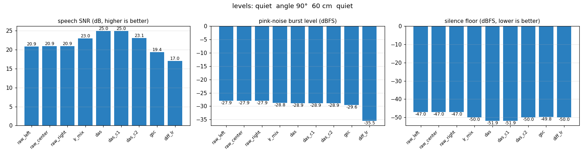
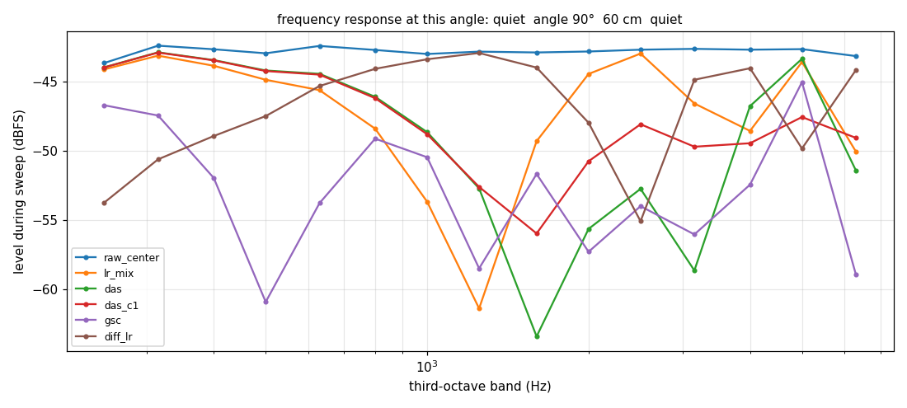
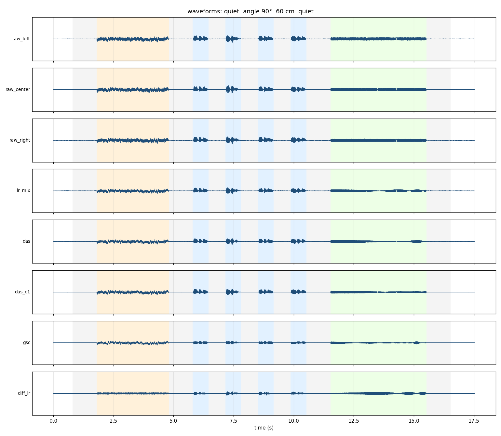
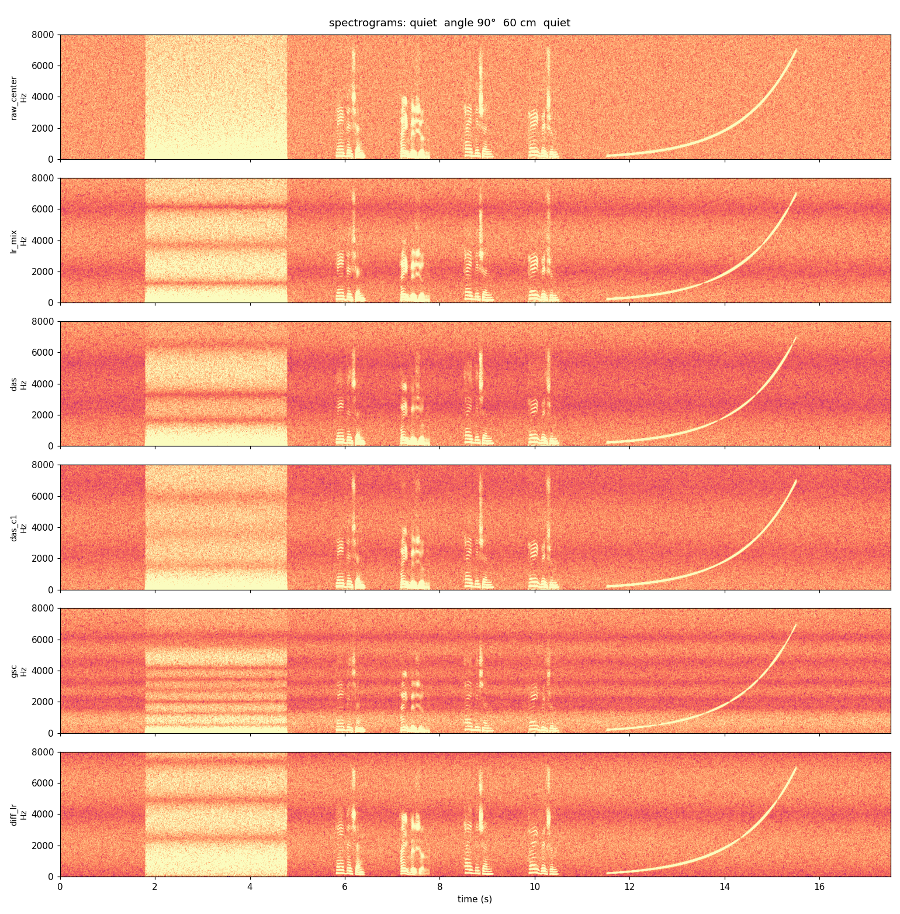

angle 90°, 60 cm, quiet, 17.53 s. Clip offset 0.8 s (confidence 0.945).
Microphones hear the source at +84° (L-R delay 6.5 samples, peak 11.2).
| path | rms_dbfs | speech_snr_db | noise_level_dbfs | silence_floor_dbfs | peak | clips |
|---|---|---|---|---|---|---|
| raw_left | -30.47 | 20.88 | -27.91 | -46.98 | 6150 | 0 |
| raw_center | -30.47 | 20.91 | -27.92 | -47.01 | 6532 | 0 |
| raw_right | -30.47 | 20.9 | -27.92 | -47.01 | 6288 | 0 |
| lr_mix | -32.09 | 22.97 | -28.76 | -49.99 | 5362 | 0 |
| das | -32.31 | 24.99 | -28.94 | -51.87 | 5173 | 0 |
| das_c1 | -32.32 | 24.97 | -28.9 | -51.85 | 5339 | 0 |
| das_c2 | -32.19 | 23.13 | -28.88 | -49.98 | 5430 | 0 |
| diff_lr | -35.53 | 17.02 | -35.47 | -50.04 | 3600 | 0 |
| gsc | -34.53 | 19.39 | -29.58 | -49.81 | 4078 | 0 |



